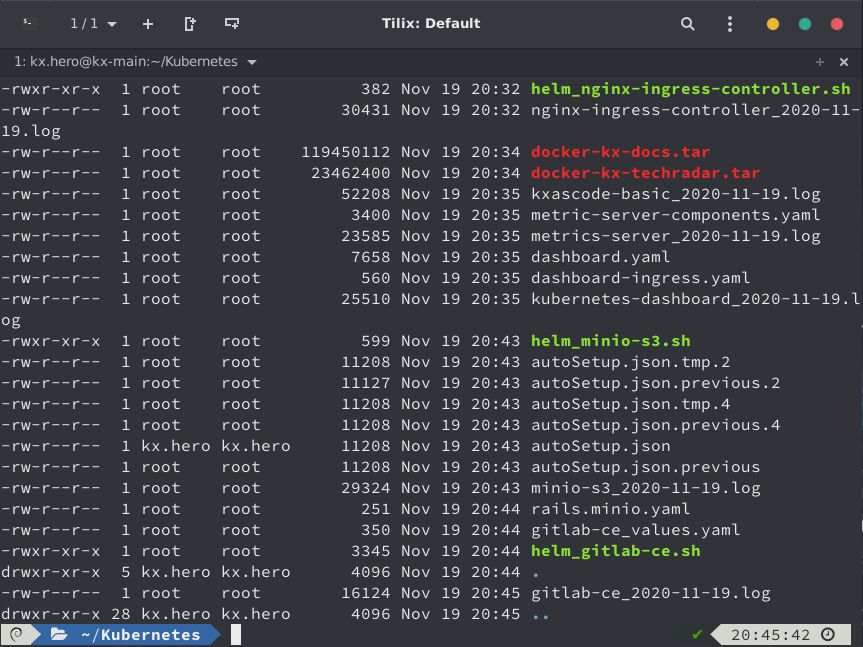
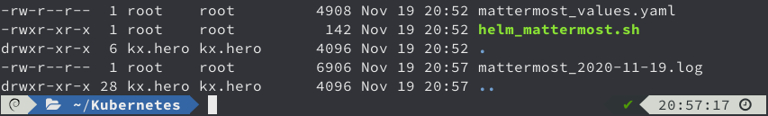
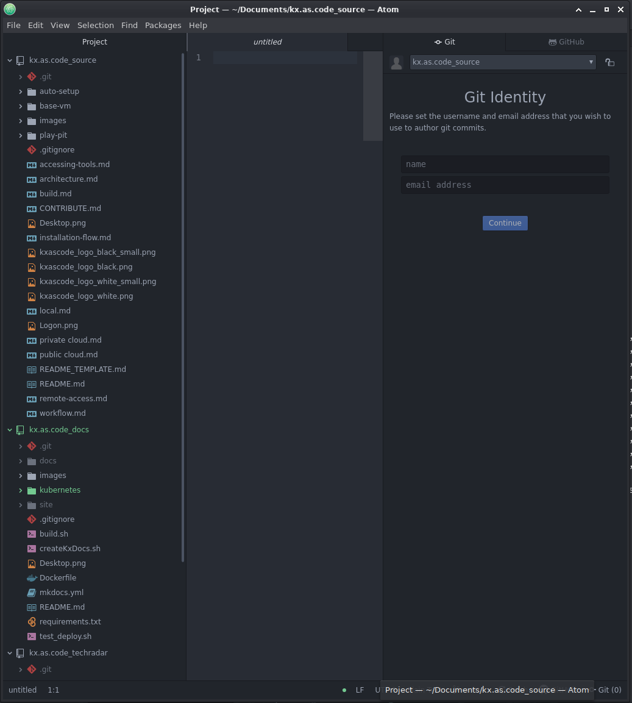
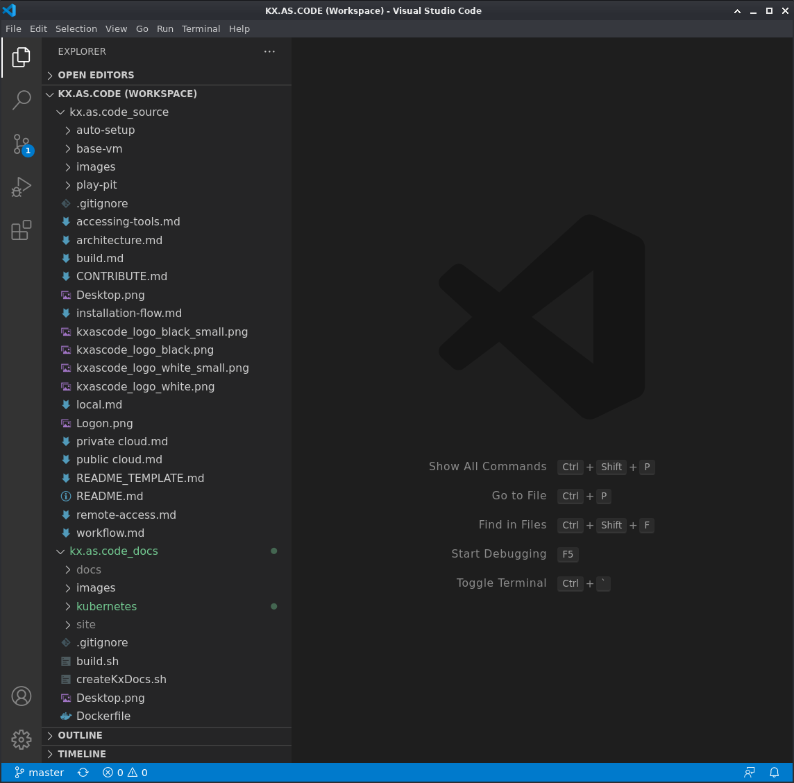

Troubleshooting#
Logs#
Logs are held in the KX.AS.CODE installation workspace - /usr/share/kx.as.code/workspace.
Each solution has its own logs.
If you execute ls -altr in this directory, you will see the component currently being installed at the bottom of the list. In this example it is gitlab-ce.

If any component fails, the items is move from the wip_queue to the failed_queue.
Once that happens, no further items on the pending queue will be processed until resolved and removed from the pending queue.
There are three choices to move the item off the failed_queue.
- Purge the failed_queue (item will be removed completely and not retried)
- Move it to the retry_queue (item will be retried)
- Move it to the skipped_queue (item will be held for later processing, when it is moved from the skipped to the retry queue)
Failure could be anything from no internet access to running out of disk space, or even Kubernetes not having enough resources to install any more pods.
If you have enough physical capacity, you could just add another node, or alternatively, allocate more CPU/memory to the existing ones.
Running out of disk space could involve adding another node, or reducing the persistent volume claim to make the solution fit into the available capacity.
If you manage to fix it, move the message from the failed_queue to the retry_queue.
If you want to fix it later and continue with installing the rest of the items in the pending_queue, then simply purge the message from the failed_queue. or send it to the skipped_queue.
See manual provisioning for more details on managing the queues.
Helm Specifics#
For Helm based installation you can see not only the logs, but also the Helm commands and the values.yaml file.
Here for the Mattermost installation for example, you can see three files:
- Helm script
- Helm values file
- Log output

Analysing these may also help to determine what went wrong.
It also helps to run the Helm script manually in the workspace folder, as this often shows the reason for the failure, that was not immediately apparent in the logs.
cd /usr/share/kx.as.code/workspace
sudo helm_mattermost.sh
Checking the code#
Finally, if you need to check the scripts, you will find all source code under ~/Documents/kx.as.code_source.
Read the Contribution Guidelines if you want to share any fixes and need info on how to contribute to this project.
To make things easier, the KX.AS.CODE Git repositories are pre-configured into the Atom and VSCode applications.
Atom#

VS Code#

RabbitMQ#
Problem: Messages in pending queue not consumed#
- No application installation triggered.
Solution 1:
- Check if messages are in failed queue. If yes, move messages to pending queue.
Solution 2:
- Execute
pollActionQueue.sh $ /usr/share/kx.as.code/git/kx.as.code/auto-setup/pollActionQueue.sh- Note: Run as sudo user inside KX.AS Code VM. May need to disconnect from VPN.